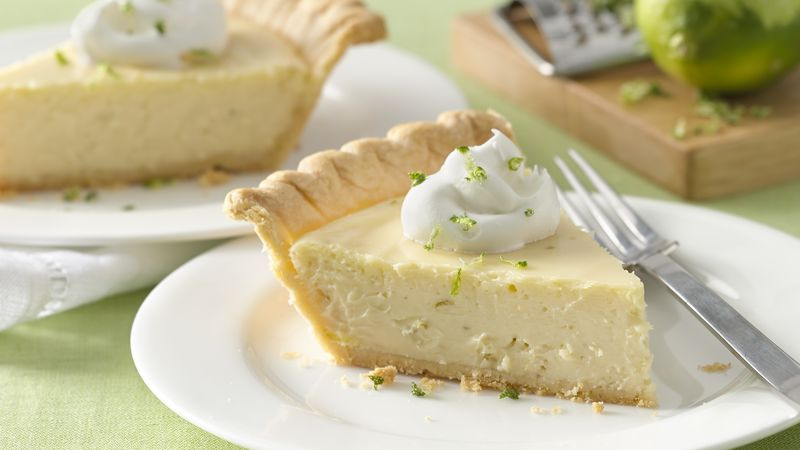
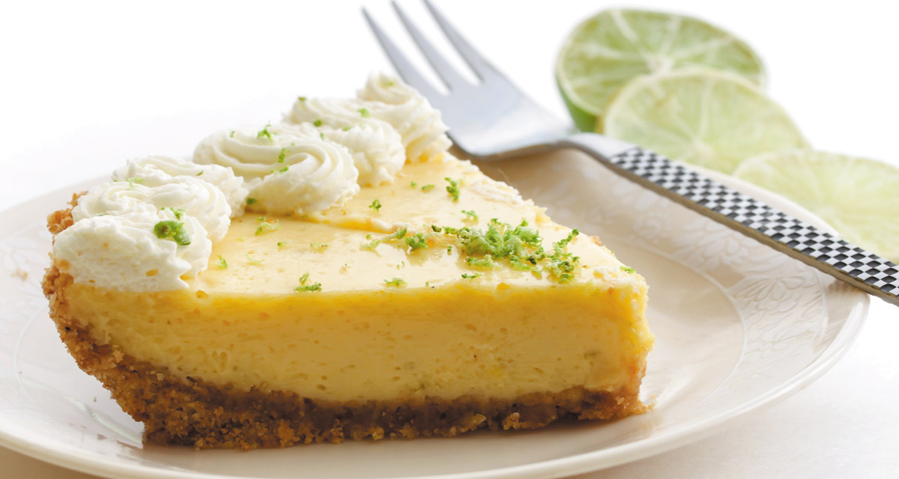

There are two main key lime pie crusts: graham cracker crust and pastry crust. These two types have been the topic of much debate, which both sides fighting to prove that their crust is the better version.
Pastry crusts are actually the original version of key lime pie. Any native of Key West, where key lime pie may have originated, who uses family recipe from before the 1930s can tell you that their recipe uses pastry crust. Pastry crust has rather dimmed in popularity over the years, but there are still many who prefer a light, flakey crust on their key lime pie.
Making the pastry dough for the pastry crust generally invovles the combination of flour and cold butter. Sugar, salt, and ice-cold water are also often used.
In 1928, Monroe Boston Strause, a renowned piemaker, was looking for a better crust for custard pies. His solution was the graham cracker crust. Graham cracker crusts take less time to prepare, and they also store long and don't get soggy under the wet custard. These were all important benefits, especially for commercial key lime pie preparation. People also loved the taste, and graham cracker crusts began to catch on.
Graham cracker crust is now the most popular crust for key lime pie. It is made with crushed graham crackers, and it is often brought together with butter or vegetable oil and sweetened with sugar.
Your key lime pie experience isn't limited to only the two most popular options. There are many new kinds of crust popping up, including ones made of cookies, nuts, cereals, and pretzals. In the end, key lime pies taste great with almost any kind of crust!